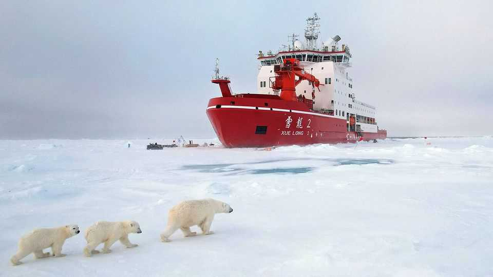
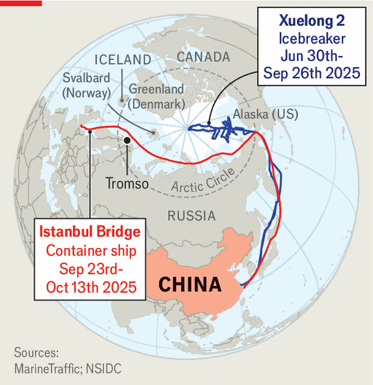

China | The melting north
What China is really up to in the Arctic
Its close co-operation with Russia is alarming many in the region
February 12th 2026

As WINTER began in the Arctic, China was celebrating a banner year there. In September one of its ice-breaking ships, the Xuelong 2, completed the country’s biggest ever Arctic expedition (see map). It involved a hundred scientists and China’s first crewed deep-sea dive beneath the ice. In October a Chinese-operated container ship finished the first scheduled transit from China to Europe via the Arctic without using icebreakers. Chinese media hailed its 20-day voyage on the Northern Sea Route (which took half the time of the Suez Canal) as the “fastest delivery in the history of container shipping”.
Yet the mood among China’s Arctic researchers was subdued as they gathered in early February for two conferences in Tromso in northern Norway. At the annual China-Nordic Arctic Research Centre conference, also attended by The Economist, Chinese participants did not mention the “polar silk road”, the grand plan to develop Arctic shipping routes, infrastructure and mining that China outlined in 2018. Instead they suggested that the Arctic was not among China’s foreign-policy priorities. And they lamented the new focus on security in the region, especially since Donald Trump has intensified efforts to commandeer Greenland.

China’s sudden modesty about its Arctic ambitions stems from a dizzying shift in the region’s geopolitics. Mr Trump’s recent claim that Chinese navy ships were lurking off Greenland was codswallop. His threat to the territory has deepened tensions with allies, prompting some to lean closer to China. But Chinese activities elsewhere in the Arctic are genuinely troubling for America, Canada and Europeans, especially because of China’s alignment with Russia. Some fear China is gathering data and experience to operate navy ships and submarines there. Since Russia’s full-scale invasion of Ukraine in 2022, Nordic countries that had once hoped to preserve the Arctic as a zone of peaceful co-operation have started to prioritise security in the high north.
China’s response is to play down the security-related aspects of its Arctic plans. Back in 2018, it portrayed them as part of the Belt and Road Initiative, a trillion-dollar programme to reshape global trade by building transport, energy and other infrastructure. Declaring itself (neologistically) a “near-Arctic state”, it said that as polar ice retreated, new sea routes and opportunities to exploit minerals could “have a huge impact on the energy strategy and economic development of China”. China’s Arctic activities went “beyond mere scientific research”, spanning security and governance, it declared.
Now, China presents itself as a partner in climate-change research (unlike Trumpian America). Zhang Beichen, the deputy head of the Polar Research Institute of China, told the Tromso conference that China might allow other countries to join its future Arctic expeditions. China is ready to “strengthen transparent and open scientific collaboration with Nordic partners and all other Arctic stakeholders”, he said. Zhao Long of the Shanghai Institutes for International Studies, a Chinese think-tank, accused Western countries of “over-securitising” China’s activities. European governments must understand that “China has very limited goals regarding the Arctic,” he told The Economist.
Some at the meeting, and afterwards at a bigger “Arctic Frontiers” get-together, expressed sympathy for China’s position. Many accused America of exaggerating the Chinese regional presence. Norway’s prime minister, Jonas Gahr Store, said there was no evidence of Chinese naval ships off Greenland. He also noted that China’s Arctic scientists had only a limited presence in Norway: one research station in the Svalbard archipelago. Nonetheless, he said, Russia and China do pose the chief intelligence threats “and their prime focus is in the north”. He also said Norway had intensified monitoring of China’s activities after previous research was found to be for potential military purposes.
China’s activities are drawing ever closer scrutiny from Norway’s neighbours, other NATO partners and the EU. Kaja Kallas, the EU’s foreign-policy chief, raised a widely shared fear that China could weaponise Arctic shipping routes and mineral supply chains. Sweden stopped China from gaining access to an Arctic space station in 2020 and withdrew from the China-Nordic Arctic Research Centre in 2023. Finland has scaled back projects involving China, too. Danish spies warned in December that China aimed to operate naval ships and submarines in the Arctic within five to ten years.
The challenge facing China is two-fold. First, many countries in the region recall its earlier, more aggressive Arctic approach. That entailed efforts to invest in projects including three airports in Greenland, another in Finland and a vast tract of land in Iceland. Many were put off by the scale of those plans, as well as China’s policy to demand co-operation between its civilian entities and armed forces. Norway was also upset by nationalistic displays at China’s research station in Svalbard.
The second, bigger problem for Europeans, especially, is China’s troubling relationship with Russia. Russia has grown increasingly reliant on China because of Western sanctions and Chinese support for the war in Ukraine. The two countries now work together to develop the Northern Sea Route by investing in ports, technology and training. Dozens of the 90-odd ships which used that route last year are part of a sanctions-busting “shadow fleet” ferrying Russian oil to China. The countries also collaborate more on science, joint expeditions and data-sharing.
Although both say these efforts are purely civilian, Western officials believe otherwise. Data on water temperature and salinity are critical for submarine operations as well as research on climate change; atmospheric research helps to guide missiles. “They’re not studying the seals and the polar bears,” General Alexus Grynkewich, NATO’s top commander in Europe, declared in January. China and Russia have also expanded overt security co-operation in the region, conducting their first joint coastguard patrols there and their first joint flight of strategic bombers off Alaska, both in 2024.
An end to war in Ukraine could ease tensions with Europe, letting China expand its Arctic collaboration and maximise its access to the region. That would ease its reliance on Russia, which controls most of the Northern Sea Route’s coastline and charges steeply for using ports and icebreakers. Europe, however, fears further Russian aggression, possibly in the high north. So until China reviews its Kremlin ties, its outreach to other Arctic states will meet an icy response. ■
Subscribers can sign up to Drum Tower, our new weekly newsletter, to understand what the world makes of China—and what China makes of the world.